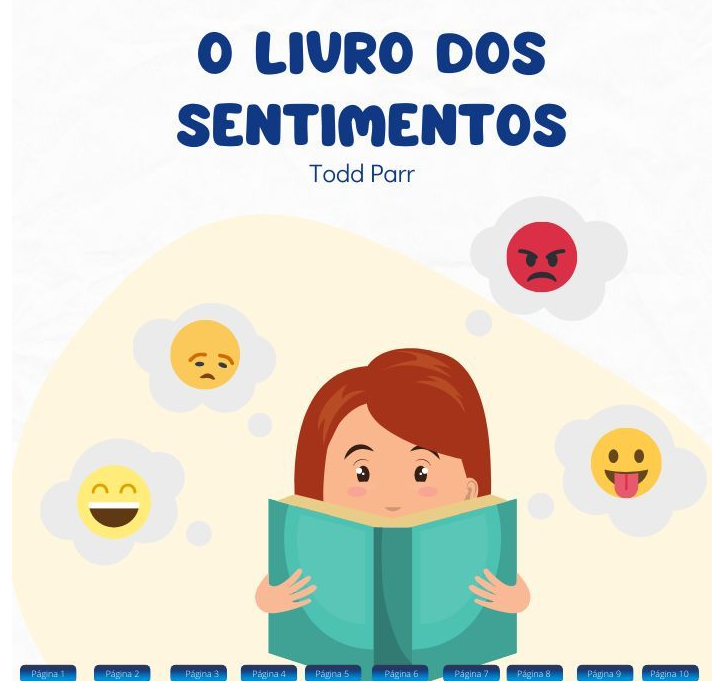

►Space ship rescue
Jogo feito no Construct 2 na matéria de Experiência criativa.
Jogo inspirado em jogos rêtros como Megaman,Mario,Castlevania
Possui 3 fases e um chefão final.
💡Sistema distância COVID-19
Sistema inteligente feito no Tinker Card onde avalia a distância da pessoa
e dependendo da sua distância um alarme é tocado junto com um Led acesso inteligente.

►Livro dos sentimentos
Aplicativo multimídia feito na matéria Experiência Criativa
Aplicativo desenvolvido no software Processing.O aplicativo conta com som e vídeo.
Além de gifs,e o seu intuito é explicar de forma lúdica para as crianças como enteder seus sentimentos
►Jogo feito em Python
Jogo pedra,papel,tesourasimples feito em Python.
No jogo tem opções de jogar contra o PlayerXPlayer e PlayerXComputador